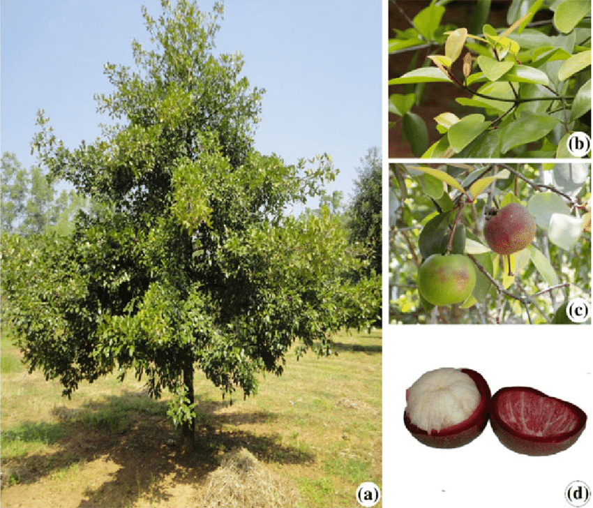

Basonym of Drug
Vrukshamla
Main Synonym
Tintidika, amlavrukshaka, chukra, vrukshamla
Regional Name
- Goan: Brindao
- Gujarati: Kokum
- Hindi: Kokam
- Kannada: Munigahuli
- Tamil: Murgala
- Marathi: Kokum
- English: Kokum Butter Tree
Botanical Name
Garcinia indica Chois
Family
Guttiferaea/ Cluceaceae
Classification (Gana)
Aacharya Charak: Hridya Mahakashaya, Amla Skanda
Bhavaprakash Nighantu: Aamradiphala Varga
External Morphology
20-25 feet high tree
Useful Parts
Fruit, root bark, seed oil
Important Phytoconstituents
Cuxanthone, Isogarcinol, Garcinol, Comboginol, Morelloflavone, Volksensiflovone
Rasa Panchak
- Rasa: Amla, Madhura
- Guna: Guru, Ruksha
- Virya: Ushna
- Vipaka: Amla
Action
Vatakaphahara
Therapeutic Indication
- Deepen (increase appetite)
- Grahi (reduce excessive secretions)
- Arshoghna (anti-haemorrhoidal)
- Hradya (good for the heart)
- Ashmarighna (remove kidney stones)
- Udavrta (for gastrointestinal problems)
Therapeutic Uses
- Atisara: Hot infusion of Vrukshamla is given in diarrhea.
- Trushna: Juice of Vrukshamla, Kola, Dadima, Chukra, and Chukrika is applied in the oral cavity in excessive thirst.
- Vipadika: Oil prepared with Vrukshamla is given in cracked heels.
Dose
- Fruit Juice: 5-10 ml
- Bark Decoction: 40-80 ml
- Seed Oil: 3-5 ml
Formulations
- Saindhavadi Churna
- Phalatrayadi Gutika
- Hingvadi Churna
- Yavanyadi Churna
Adverse Effect
Not Known
Remedial Measure
Not Required
Purification
Not Required